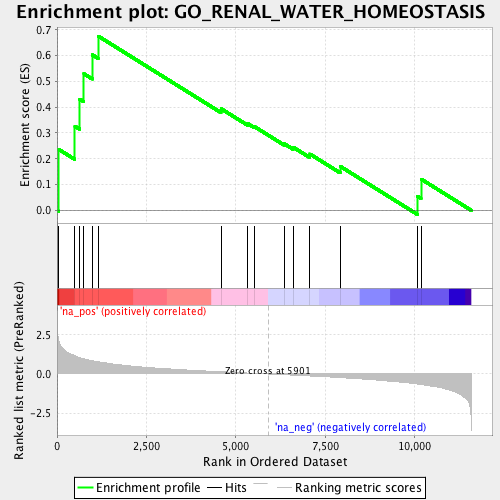
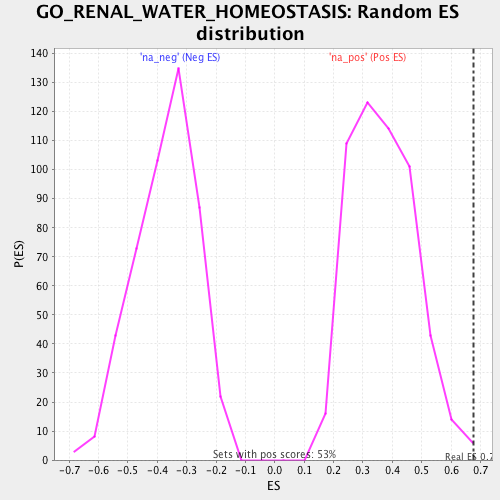

| | | Dataset | BG_SG_PDR_nPDR |
| Phenotype | NoPhenotypeAvailable |
| Upregulated in class | na_pos |
| GeneSet | GO_RENAL_WATER_HOMEOSTASIS |
| Enrichment Score (ES) | 0.67541534 |
| Normalized Enrichment Score (NES) | 1.8403949 |
| Nominal p-value | 0.0057034222 |
| FDR q-value | 0.11432358 |
| FWER p-Value | 0.839 |
Table: GSEA Results Summary

Fig 1: Enrichment plot: GO_RENAL_WATER_HOMEOSTASIS
Profile of the Running ES Score & Positions of GeneSet Members on the Rank Ordered List

Fig 2: GO_RENAL_WATER_HOMEOSTASIS: Random ES distribution
Gene set null distribution of ES for GO_RENAL_WATER_HOMEOSTASIS